Issue #817: every new screen and state, desktop and phone
Chat card while the take is filmed
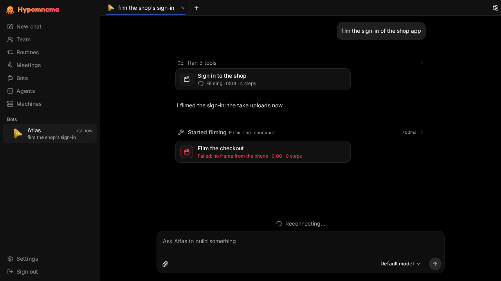
desktop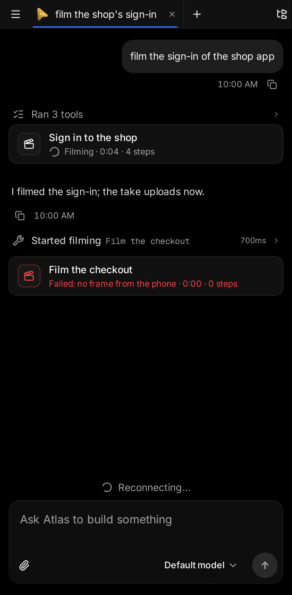
phoneChat card while uploading, and a failed take
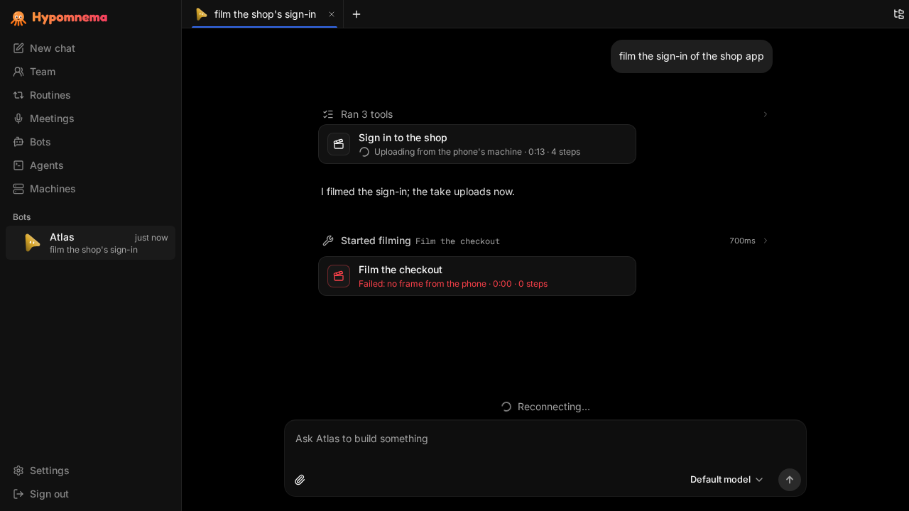
desktop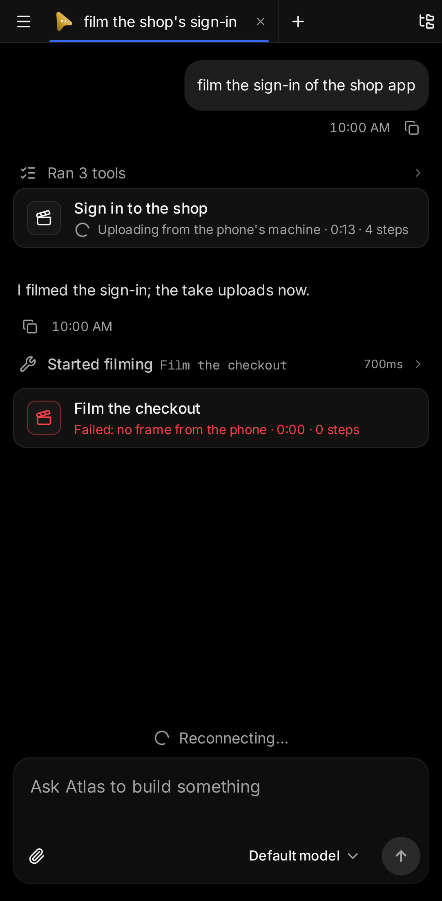
phoneChat card when available, with Open
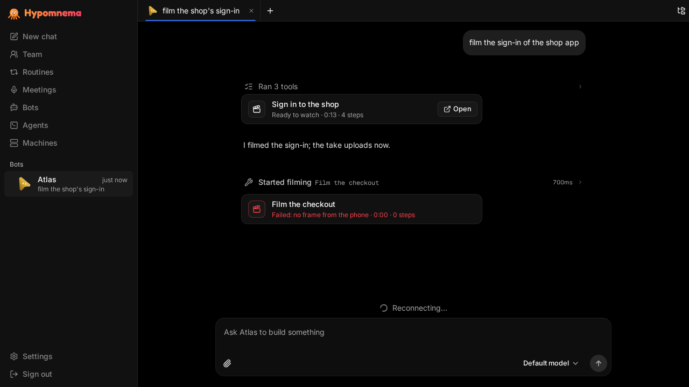
desktop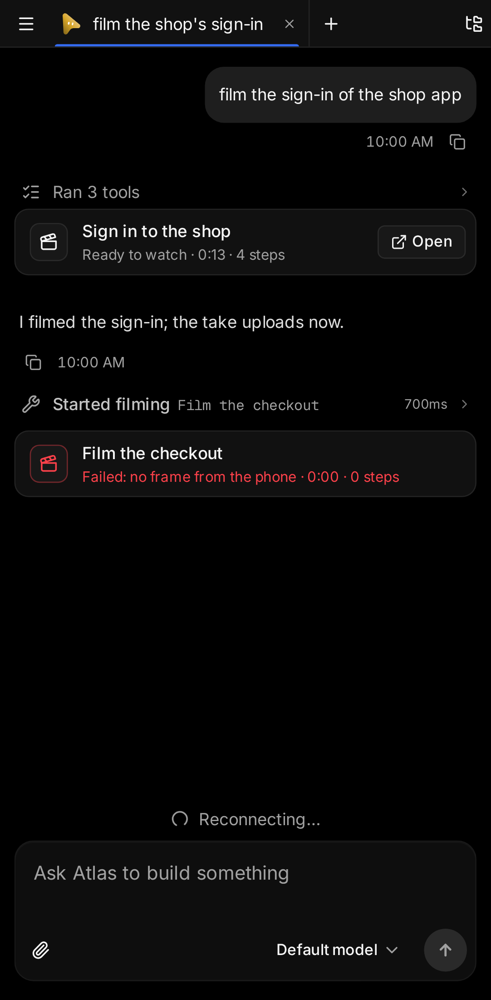
phoneThe take as a pane tab: player, timeline marks (steps, hatched pause), chapters and steps
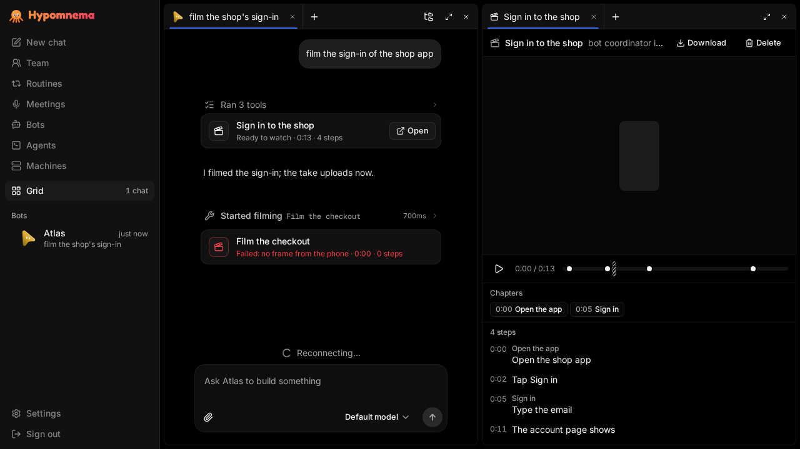
desktop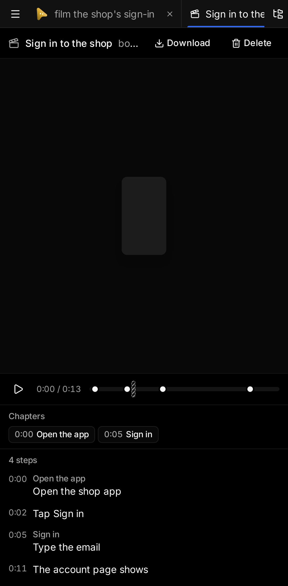
phoneDelete asks first
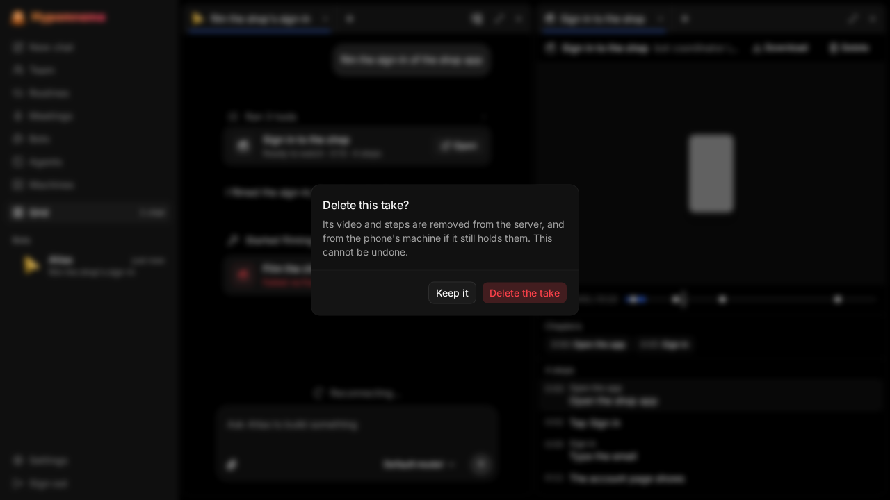
desktop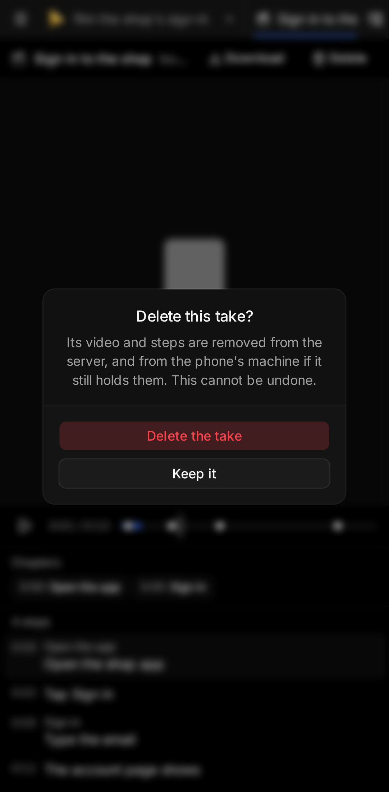
phonePhone tab: REC with take time and last line
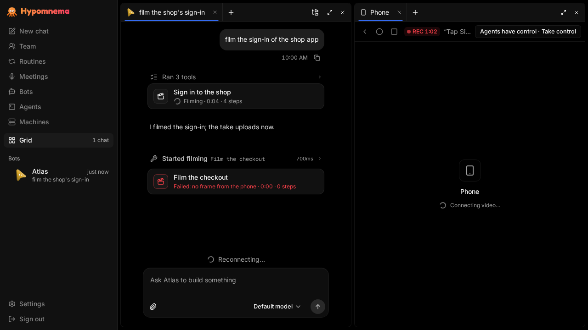
desktop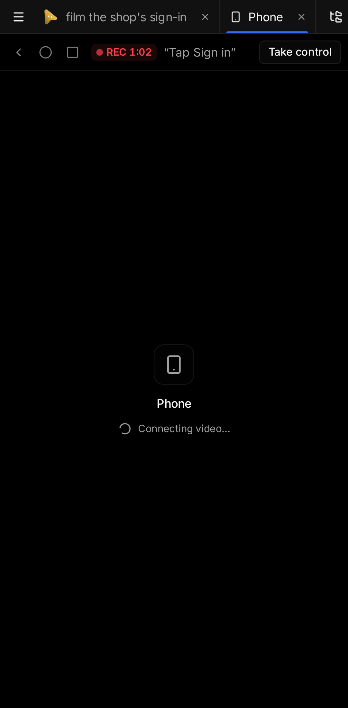
phonePhone tab: PAUSED during the owner's takeover
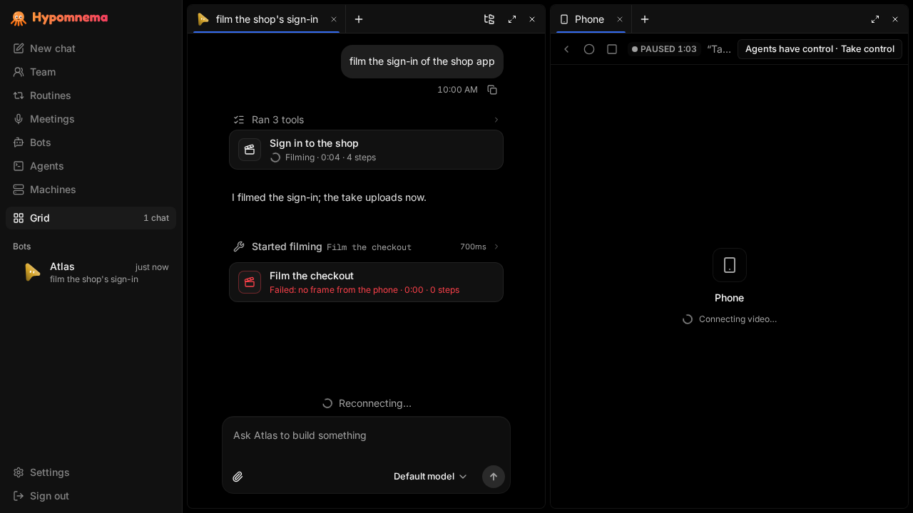
desktop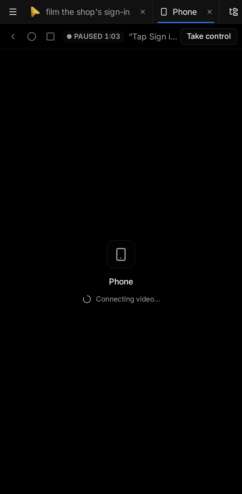
phone